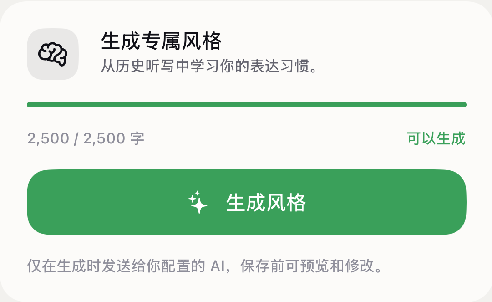
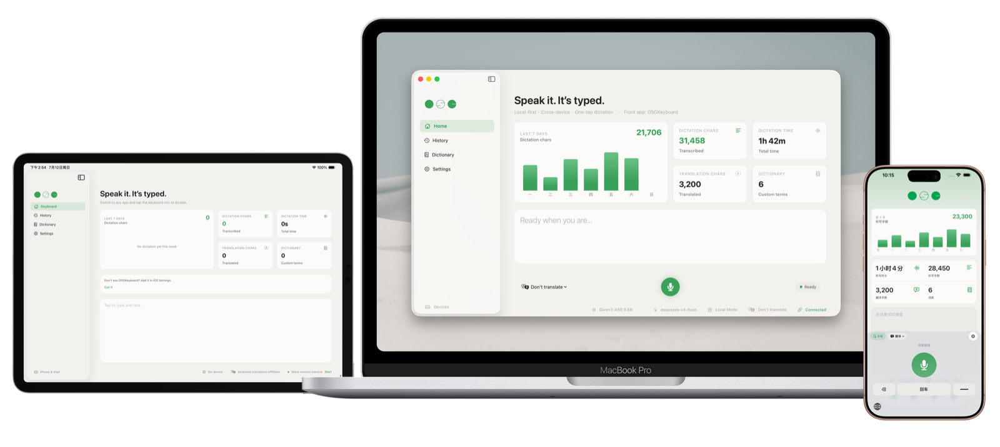
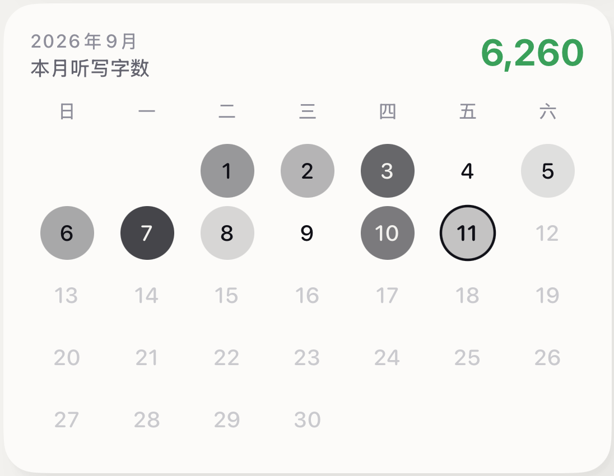
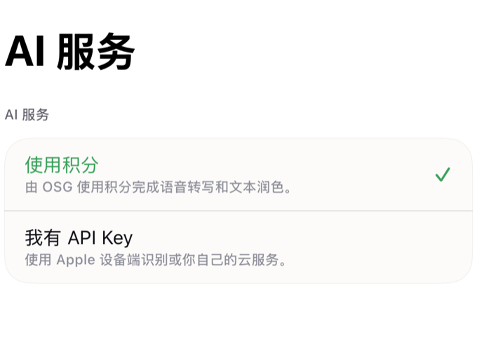
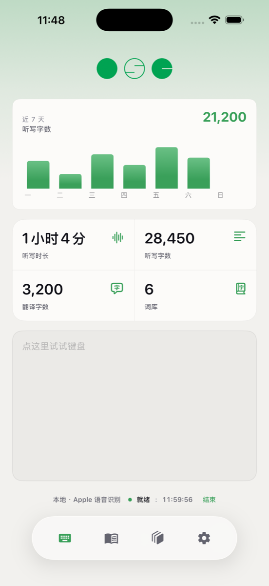
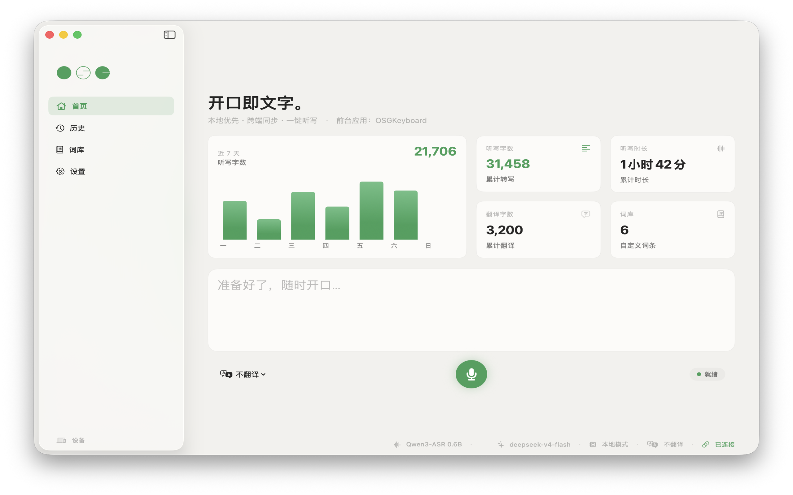

专属说话风格
累积 2,500 个有效听写字符即可生成；优先学习你反复出现的口述与明确修改，保存前需你确认。
OSGKeyboard 2.1 · 为 iOS / iPadOS 26 打造
开口即文字。 会说你的话，会办你的事。
一把 AI 语音输入法：听写、问 AI、中英打字在同一个键盘完成。它是会学你语气的嘴替输入法，也是复制之后就能替你行动的 Agentic 键盘。默认端侧识别，核心功能无需账号。

Agentic 语音输入法
一次真实的聊天，三个动作完成：语音输入法负责听写，嘴替输入法负责把话说好，Agentic 键盘负责下一步。向下滚动，看它怎样工作。
语音输入法
轻点麦克风，端侧识别边说边上屏；录音默认不离开设备。说完还能口述修改刚才那句话。
嘴替输入法
复制对方的消息，嘴替输入法就按你的口吻备好普通、正式、轻松趣味三条回复，点一下即插入。回复偏好学自你确认过的真实表达。
Agentic 键盘
复制一段带时间或地址的文字，本地语义分析判断下一步，键盘顶栏随即换成相关操作：回复、日程、待办、导航……点「日程」，即经 EventKit 写入日历。
语音输入法 + AI 助手
轻点麦克风开始听写，长按直接向 AI 提问。回答流式显示在键盘里，确认后才进入输入框——每一步都在你的掌控之中。
轻点听写，长按提问，语音与 AI 共用一个入口。
回答实时显示，可随时停下、修改或重来。
仅当光标位置与输入上下文未变化时才自动上屏，还能口述修改最近一次插入的文字。
嘴替输入法
嘴替输入法从你确认过的真实输入中学习，而不是套用模板。所有偏好与词库只保存在本机。

累积 2,500 个有效听写字符即可生成；优先学习你反复出现的口述与明确修改，保存前需你确认。
普通、正式、轻松趣味，一键切换；回复偏好与听写偏好分别学习，选择反馈仅保留在本机。

当月听写字数一目了然；重复使用的名字与术语会进入个性词库，同时提升打字候选与语音识别。
Agentic 键盘
复制一段文字，本地语义分析会理解它该去哪——回复、总结、翻译、待办、日程、导航。键盘顶栏只按相关度列出用得上的技能，分析全程不上传剪贴板原文。
中英打字
全拼、自然码、小鹤、微软与搜狗双拼；模糊音、简拼排序、展开候选、数字与滑动选词、中英混输。
三格 QuickType、约 4 万词离线词表、前缀补全、自动纠错、下一词建议、撤销纠错与句首自动大写。
一个个性词库，同时参与中文候选、英文建议、语音偏置与润色保护。
隐私与选择
默认优先使用端侧能力。需要云端识别或 AI 功能时，可配置自己的 API 密钥，或选择托管积分服务。
iPhone 与 iPad 默认使用 Apple 设备端语音识别；搭载 Apple 芯片的 Mac 默认运行本地 Qwen3 MLX 模型。原始录音不离开设备。
无需 OSG 账号 · 音频留在设备配置你选择的语音识别或 AI 服务商，请求直达服务商；凭证保存在系统钥匙串。
无需 OSG 账号在 iPhone 与 iPad 上，可通过 Apple 登录使用托管语音与 AI，无需自行管理密钥。
主动选择后启用 · 可注销账号可选账号与积分
本地听写和自备服务商始终可以独立使用。登录只在你需要托管积分时发生。

iPhone 与 Mac 语音输入法

听写、AI 助手、中文与英文输入、剪贴板技能、个人词典和可选 iCloud 同步。

全局热键加屏幕底部的实时听写浮窗；Apple 芯片 Mac 默认使用 Qwen3 MLX 本地模型，Apple 语音识别作为备用。
公开下载的 Mac DMG 是已签名并公证的历史版本 1.1；仓库中的 Mac 源码已演进至 2.2，最新功能请用 Xcode 26 从源码构建。
常见问题
嘴替输入法是能替你把话说好的输入法：你随口说出想法，它在保留你个人语气的前提下整理成得体的文字。OSGKeyboard 会从你确认过的真实听写中学习说话风格，复制对方的消息后，会按你的口吻给出普通、正式、轻松趣味三条回复，点选即插入。
Agentic 键盘不只负责输入文字，还能理解内容并替你完成下一步。在 OSGKeyboard 中复制一段文字后，本地语义分析会在键盘顶栏按相关度列出可用操作，例如回复、总结、翻译、写待办、建日程或导航；待办与日程通过系统 EventKit 直接写入，推荐过程不会上传剪贴板原文。
系统听写只负责把语音转成文字。OSGKeyboard 作为 AI 语音输入法，在端侧识别之外，还提供长按向 AI 提问并先预览再插入、口述修改上一次输入、学习你语气的个性润色、剪贴板 Agentic 技能，以及全拼与多种双拼的中英打字；在 Mac 上按住 Option 即可全局听写。
不需要。使用端侧听写或自行配置的服务商时，无需 OSG 账号。通过 Apple 登录仅用于托管积分、积分购买、邀请奖励和账号资料管理。
使用默认的端侧识别时，录音不会上传。只有你明确选择自行配置的云端识别或托管积分云端识别时，音频才会离开设备，并发送至相应云端服务进行处理。
开启“完全访问”后，键盘才能与主 App 共享设置、读取已保存的服务配置，并在你主动启用后访问剪贴板。此权限不代表 OSGKeyboard 会收集日常键入内容。
不是。项目采用源码可见许可，允许个人学习与非商用本地使用；再分发、公开衍生版本和商业使用需要获得许可。
当前可下载、已签名并公证的 Mac 安装包为 1.1 版。仓库中的 Mac 版源码已演进至 2.2；如需最新功能，请在 macOS 上使用 Xcode 26 或更高版本自行构建。
开口即文字
先使用免费的端侧核心功能；需要时，再配置自己的 API 密钥或选择托管积分服务。